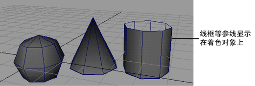

此“着色”(Shading)菜单在场景视图之上显示，或者在具有多个场景视图的布局（如“四个视图”(Four View)布局）中每个视图面板之上显示。
“着色”(Shading)菜单提供了多种方式来查看场景。质量范围可以从简单的线框显示到平滑着色处理视图。
- 线框(Wireframe)
-
为多边形网格绘制边并为曲面绘制等参曲线。这是默认的着色质量。
- 对所有项目进行平滑明暗处理(Smooth Shade All)
-
将所有曲面、网格和粒子显示为进过平滑着色处理的对象。
注：使用“硬件纹理”(Hardware Texturing)时，着色器插件和纹理插件受支持。使用“对所有项目进行平滑着色处理”(Smooth Shade All)模式时，仅使用具有以下特定名称的属性：漫反射、hardwareColor、颜色、透明度、白炽度，镜面反射颜色、光泽度。
- 对选定项目进行平滑着色处理(Smooth Shade Selected Items)
-
将选定项目显示为平滑着色处理对象。
- 对所有项目进行平面着色(Flat Shade All)
-
将所有曲面和网格显示为平面着色对象。
- 对选定项目进行平面着色(Flat Shade Selected Items)
-
将选定项目显示为平面着色对象。
- 边界框(Bounding Box)
-
将对象显示为表示其边界体积的长方体。边界框可以加快 Maya 操作的速度，同时还可以将复杂模型显著地区分开来。
边界框包含壳线及实际几何体。因此，边界框的尺寸可能大于这些几何体的尺寸。
注：若要查看边界框的坐标，请打开“属性编辑器”(Attribute Editor)，然后单击形状节点选项卡并打开“对象显示”(Object Display)区域。系统将沿 X、Y 和 Z 轴显示曲面的只读最小和最大世界空间边界坐标。
- 使用默认材质(Use default material)
-
在着色显示模式下，显示对象的默认着色材质，而不管指定的着色材质。
- 着色对象上的线框
-
在视图中的所有着色对象上附加线框显示。
 - X 射线
-
将所有着色对象显示为半透明状态。这对于查看模型的隐藏部分可能非常有用。
- X 射线显示关节(X-Ray Joints)
-
在着色对象顶部上方显示骨架关节，以便选择关节。
- X 射线显示活动组件(X-Ray Active Components)
-
在其他已经过着色的对象上方显示活动组件。此着色模式用于确保不会意外选中不需要的组件。仅适用于组件模式下的多边形对象。
- 循环绑定显示模式(Cycle rig display mode)
-
用于在视口显示模式之间切换（类似于 MotionBuilder），按 Alt + A 可在以下 3 种视图模式之间循环：
- 仅显示网格(Display mesh only)
- 显示带有 X 射线的网格、绑定和关节
- 显示不带 X 射线的网格、绑定和关节
- 颜色索引模式(Color Index Mode)
-
（仅适用于 Linux 系统）用于在复杂场景中更快速操纵线框对象（例如，在线框模式下使用全色图像平面）。
- 背面消隐(Backface Culling)
-
对于在平滑着色模式或平面着色模式下显示的对象，使对象的背面透明，这有助于加快显示或操纵对象。
- 平滑线框(Smooth Wireframe)
-
显示 Maya 三维视图（包括“硬件渲染缓冲区”和“3D Paint Effects”视图）中的平滑线框对象。
注：在二维视图（包括“UV 纹理编辑器”(UV Texture Editor)）中不起作用。
- 硬件纹理(Hardware Texturing)
-
在场景视图中显示硬件纹理的渲染结果，好像在外部查看器中显示它们。
- 硬件雾(Hardware Fog)
-
可以在 Maya 外部的程序中实现硬件雾效果的模拟。显示渲染前聚光灯雾的分布方式。硬件雾用于预览用途，仅显示在透视视图中。
在 Viewport 2.0 中，选择“着色 > 硬件雾”(Shading > Hardware Fog) >
 时，将显示“硬件渲染器 2.0 设置”(Hardware Renderer 2.0 Settings)窗口，允许您调整雾设置。选择“着色 > 硬件雾”(Shading > Hardware Fog) > ，以设定“硬件雾”(Hardware fog)选项。
时，将显示“硬件渲染器 2.0 设置”(Hardware Renderer 2.0 Settings)窗口，允许您调整雾设置。选择“着色 > 硬件雾”(Shading > Hardware Fog) > ，以设定“硬件雾”(Hardware fog)选项。
- 景深
-
使用 Viewport 2.0 时，可以对每个视口启用或禁用景深。若要在视口中查看景深效果，必须首先在摄影机属性编辑器中启用“景深”(Depth of Field)。请参见在 Viewport 2.0 中查看景深效果和调整景深。
- 将当前样式应用于所有对象(Apply Current to All)
-
将当前 3D 视图的着色样式应用于场景中的所有对象。